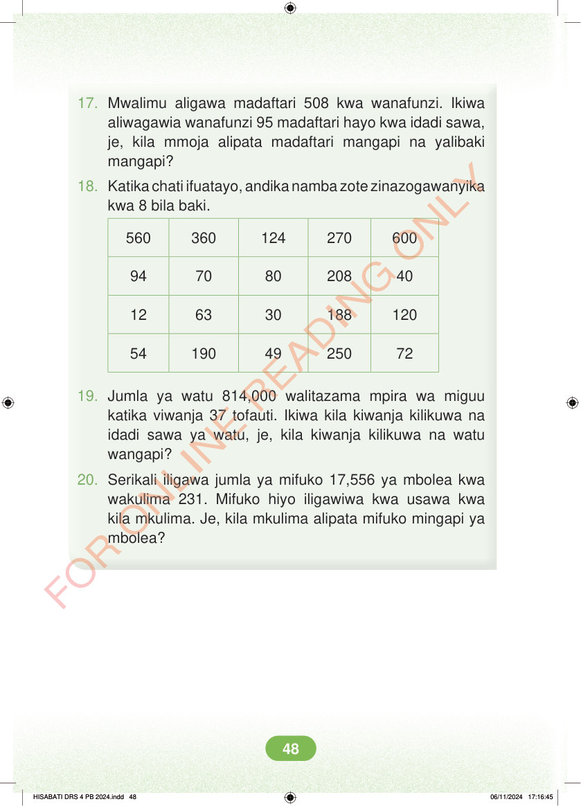

17. Mwalimu aligawa madaftari 508 kwa wanafunzi. Ikiwa aliwagawia wanafunzi 95 madaftari hayo kwa idadi sawa, je, kila mmoja alipata madaftari mangapi na yalibaki mangapi? 18. Katika chati ifuatayo, andika namba zote zinazogawanyika kwa 8 bila baki. 560 360 124 270 600 94 70 80 208 40 12 63 30 188 120 54 190 49 250 72 19. Jumla ya watu 814,000 walitazama mpira wa miguu katika viwanja 37 tofauti. Ikiwa kila kiwanja kilikuwa na idadi sawa ya watu, je, kila kiwanja kilikuwa na watu wangapi? 20. Serikali iligawa jumla ya mifuko 17,556 ya mbolea kwa wakulima 231. Mifuko hiyo iligawiwa kwa usawa kwa kila mkulima. Je, kila mkulima alipata mifuko mingapi ya mbolea? HISABATI DRS 4 PB 2024.indd 48 HISABATI DRS 4 PB 2024.indd 48 06/11/2024 17:16:45 06/11/2024 17:16:45